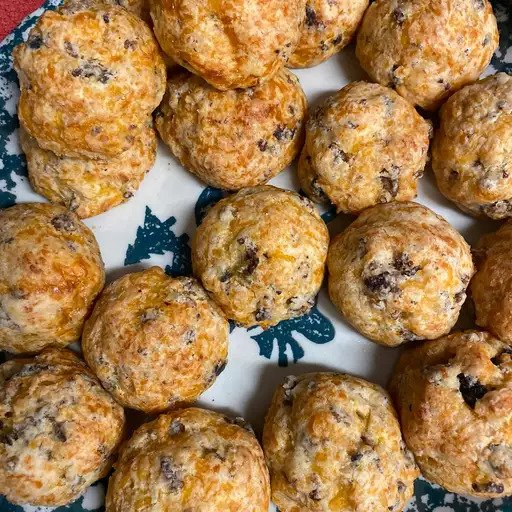

Roasted Rack of Lamb
Recipe by JENNINE1980


Sausage Balls
Recipe by Stephanie
This is a collection of Odins' favorite meals gathered over many centuries. The only recipe we're missing is his favorite Mead, because he likes to always keep us guessing.
Thanks for stopping by!
Recipe by JENNINE1980
Recipe by Stephanie